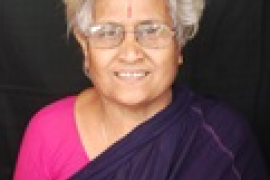
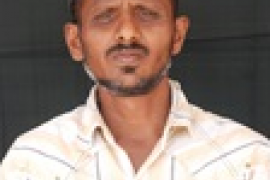
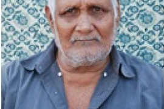
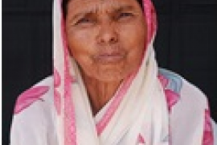

A loving home where our elders live with dignity, care, and compassion
Donate Now Learn MoreTo provide a safe, loving, and dignified home for senior citizens who need care, companionship, and support in their golden years.
At Shri Sai Dwarkamai Vridhashram, we believe every elder deserves to be treated with respect and love. Our dedicated team ensures that each resident feels at home, with access to healthcare, nutritious meals, recreational activities, and spiritual fulfillment.
Read More About UsElders Cared For
Dedicated Volunteers
Years of Service
Meals Served Daily
Hear from the families and residents who are part of our community

My mother has been living at Dwarkamai for 3 years now. The care and love she receives is extraordinary. I am at peace knowing she is in such good hands.

This is not just an old age home — it's a family. The staff treats every resident like their own grandparent. I couldn't be more grateful.

I came here feeling lonely, but now I have so many friends. We do yoga together, celebrate festivals, and enjoy every day. This place gave me a new life.

The medical facilities and regular health checkups give us immense confidence. The team goes above and beyond for each elder's well-being.
Join us as a volunteer and bring joy to the lives of our beloved elders
Become a Volunteer